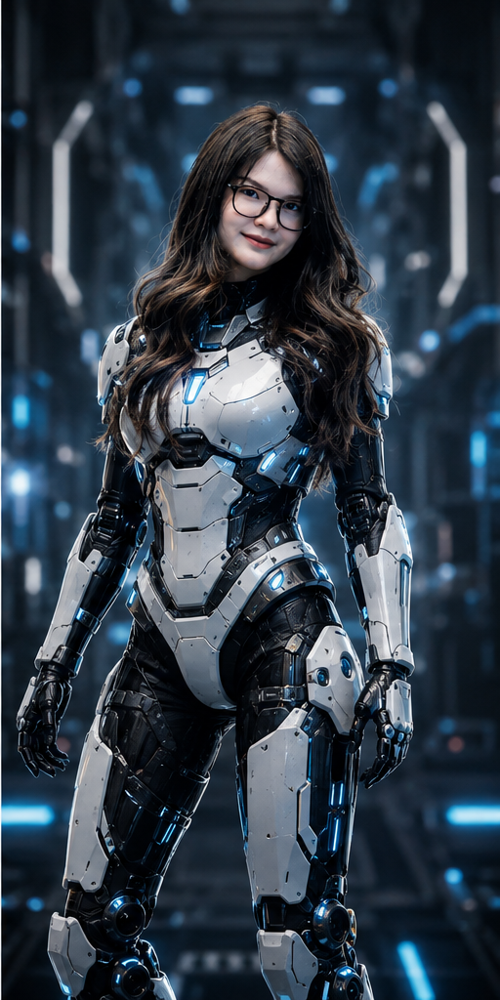
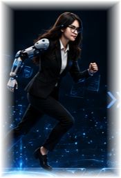
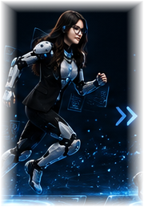
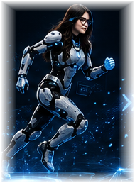
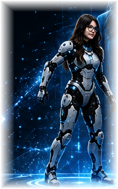
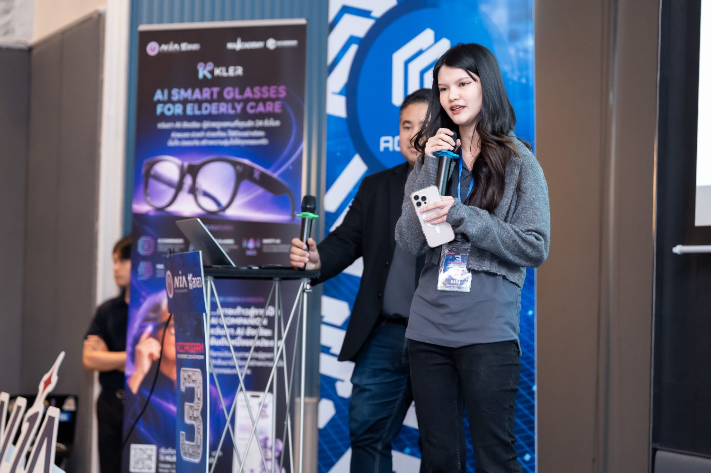
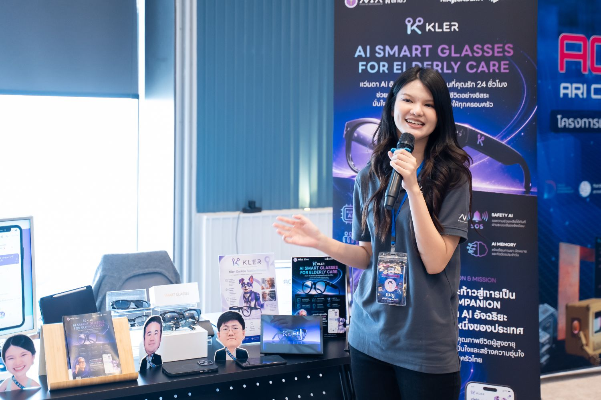
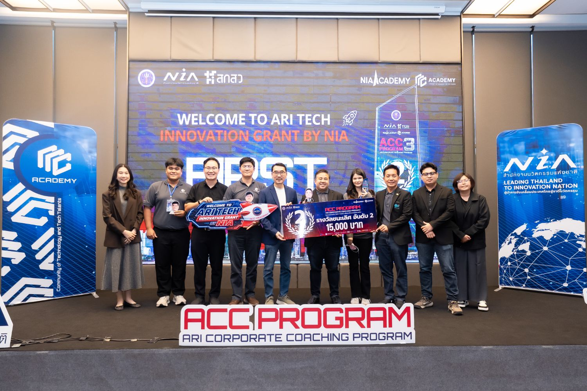

0 → 0
HRS
Idea to prototype
Idea to working AI prototype, live on stage

Idea to working AI prototype, live on stage
Years delayed → national platform go-live

03Disconnected systems → one platform

04Platform modules built stand-alone

051st runner-up — twice, in one year

06NIA-backed funding pathway unlocked
I don’t chase AI trends. I find where intelligence creates measurable business value — then design the solution that solves the real operational problem.
Ideas become products through structure. I translate ambiguity into requirements, roadmaps, priorities and plans teams can actually ship.
Disconnected systems create friction. I redesign fragmented operations into integrated digital ecosystems that scale and give visibility.
A product only matters when people adopt it. I turn shipped solutions into market-ready products through positioning, pricing and growth.
The B2B & B2C retail-wholesale arm of CP Group (Makro & Lotus's) — one of Southeast Asia's largest retailers.
Product Owner · Commercial Hub & Retail Platforms
Collapse fragmented item-management, pricing and promotion workflows spread across 2–3 systems into one centralized platform with connected data, status and tracking.
From requirement to module flow, business logic, data transformation, user support and delivery — solo.
Fragmented workflows and unsynced data replaced by one platform with end-to-end visibility.
Thai and international teams, users, developers, business stakeholders and executives on one direction.
Built and pitched under ACC Program 3 — ARI Corporate Coaching, National Innovation Agency (NIA) Public Demo Day.
Product Lead · Positioning, Strategy & Pitch
Take an unclear AI smart-glasses idea and make it a fundable elderly-care product: positioning, feature logic, business model, roadmap, GTM and investor narrative.
Six functions that turn a device into a full care ecosystem for older adults — and peace of mind for their families.
From an unclear idea to a complete platform with positioning, strategy, features, roadmap, GTM and investment narrative.
Placed 2nd at ACC Program 3 Public Demo Day on product clarity, strategy and storytelling.
NIA-supported fast-track opportunity to apply for THB 5M — beyond idea stage, into fundable innovation.




The first Lovable AI build-hackathon in Thailand — idea to working prototype, live, on stage.
Founder & Product Lead · Solo build
Create an original AI business idea for Thai SMEs, build it, and pitch it — alone, in a single afternoon.
At Thailand's first Lovable AI Build Hackathon, from idea stage to live prototype and final pitch.
Researched, shaped, designed, built and pitched the idea from scratch — no team.


An HR management application building tools for hiring, people ops and workforce management.
Product Consultant · Redesign, Roadmap & GTM
Reposition a standard HR application into a strategic HR-tech platform — product direction, redesign, new modules and a go-to-market motion the team had never run.
I pushed direction and pace hard; when the speed and innovation direction moved beyond the team's readiness, I stepped away professionally so they could continue at their own capacity.
A national telepharmacy platform under the Pharmacy Council of Thailand — patients consult, pay and receive medication online.
Project Manager · End-to-End Delivery
Unblock a national health platform that had been in development for 3+ years and could only do online consultation — and get the full service journey live.
Took ownership and brought the platform from consultation-only to a complete healthcare service in under a year.
Aligned requirements, dependencies, user flows and timelines so every module connected into one journey.
Built the execution structure that moved the service out of build mode and into the real market.
A NASDAQ-listed global fintech & fund-administration software firm — clients include MUFG and State Street.
Business System Analyst · HiTrust
Business System Analyst for HiTrust, a global fund-management platform serving international financial clients including MUFG and State Street — translating complex financial requirements into system logic, module specifications and delivery-ready documentation.
Supported international client delivery by designing new system modules, proposing product enhancements and turning complex financial requirements into commercially valuable solutions — strengthening client confidence and supporting a high-value deal opportunity for the business.
Worked directly with international clients and stakeholders across complex fintech and fund-management workflows.
Designed modules and workflow improvements that expanded what the platform could support.
Owned analysis end to end — discovery, BRD/CID/SOW, logic design, SIT/UAT and release support.
One of Thailand's leading life-insurance companies, serving millions of policyholders nationwide.
Business Analyst · Digital Transformation
Business Analyst on a large-scale life-insurance digital transformation — modernizing legacy AS/400 workflows into a newly built platform covering the end-to-end insurance service journey.
Helped transform legacy AS/400 insurance workflows into a newly built digital platform across multiple modules — turning complex life-insurance processes into clear requirements, system logic, documentation and testable workflows that carried the organization from legacy operations into a modern end-to-end system.
Case opening, quotation, underwriting, policy servicing, POS, after-sales and claims-related workflows.
Complex legacy rules translated into SRS, BRD, API specifications, process flows and testable requirements.
Coordinated business users, development teams and stakeholders to keep scope and system logic aligned.
An enterprise software house building large-scale systems for government and corporate clients.
Project Manager · Business Analyst · Data Analyst — one role
Rescue a security-sensitive military software project already delayed nearly one year — while acting as PM, BA and DA simultaneously.
Recovered the project cycle by rebuilding requirements, structure and execution rhythm.
PM, BA and DA at once — clients, requirements, data logic, vendors, docs, testing and delivery.